CODING AGENTS AS PIXEL WORLD MODELS
traex/DeepSeek-V4.1-Flash · 0095
点击播放 · 原生 RGB 像素
逐轮保存的候选
回放视频、检查图与代码变化。
每份候选均可单独播放。实际图片检查记录在下方工具轨迹中。
候选 01播放与检查图
点击播放 · 原生 RGB 像素

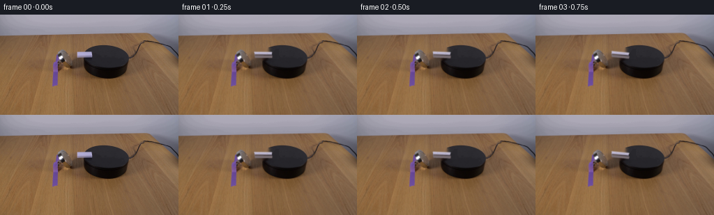
展开代码变化
--- 上一保存版本
+++ 本次保存版本
@@ -0,0 +1,171 @@
+from pathlib import Path
+
+import cv2
+import numpy as np
+from PIL import Image
+
+import artifact_io
+
+
+CASE_DIR = Path(__file__).resolve().parent
+W, H = 256, 144
+N, FPS = 20, 4
+SS = 4
+
+
+def rounded_quad(points, radius=1.25):
+ """Return a rounded polygon suitable for a small molded-plastic slab."""
+ pts = np.asarray(points, dtype=np.float64)
+ center = pts.mean(axis=0)
+ result = []
+ for i, p in enumerate(pts):
+ prev = pts[i - 1] - p
+ nxt = pts[(i + 1) % len(pts)] - p
+ prev /= np.linalg.norm(prev)
+ nxt /= np.linalg.norm(nxt)
+ result.append(p + prev * radius * 0.35)
+ result.append(p + nxt * radius * 0.35)
+ result.append(p + (prev + nxt) * radius * 0.18)
+ return np.asarray(result)
+
+
+def build_clean_plate(source):
+ """Remove the domino while preserving the table grain and platform edge."""
+ mask = np.zeros((H, W), np.uint8)
+ cv2.fillPoly(
+ mask,
+ [np.array([[106, 50], [111, 48], [135, 49], [137, 56], [135, 65], [109, 65], [106, 60]])],
+ 255,
+ )
+ mask = cv2.GaussianBlur(mask, (3, 3), 0.55)
+ clean = cv2.inpaint(source, mask, 3.2, cv2.INPAINT_NS)
+
+ # Re-establish the clean diagonal top edge where the object crossed it.
+ yy, xx = np.mgrid[:H, :W]
+ edge_x = 141.6 - 0.72 * (yy - 44.0)
+ near_platform = (yy >= 49) & (yy <= 63) & (xx >= 118) & (xx <= 143)
+ inside = near_platform & (xx >= edge_x + 1.0)
+ clean[inside] = np.array([40, 39, 44], dtype=np.float64)
+
+ # A very light grain modulation keeps the repaired wood from looking painted.
+ repaired = (mask > 2) & (xx < edge_x)
+ rng = np.random.default_rng(95)
+ noise = cv2.GaussianBlur(rng.normal(0.0, 4.0, (H, W)).astype(np.float32), (0, 0), 1.1)
+ for c, tint in enumerate((-0.4, 0.0, 0.6)):
+ clean[:, :, c] = np.where(repaired, clean[:, :, c] + noise + tint, clean[:, :, c])
+ return np.clip(clean, 0, 255).astype(np.uint8)
+
+
+def rotate_xy(x, y, angle):
+ c, s = np.cos(angle), np.sin(angle)
+ return c * x - s * y, s * x + c * y
+
+
+def slab_geometry(center, angle):
+ """Projected top and side faces of the small plastic domino."""
+ cx, cy = center
+ half_len, half_width = 12.25, 2.65
+ foreshorten = 0.57
+ corners = []
+ for sx, sy in ((-1, -1), (1, -1), (1, 1), (-1, 1)):
+ x, y = rotate_xy(sx * half_len, sy * half_width, angle)
+ corners.append((cx + x, cy + y * foreshorten))
+ top = rounded_quad(corners, radius=0.75)
+ base = top + np.array([0.55, 4.8])
+ return top, base, np.asarray(corners)
+
+
+def fill_polygon(image, polygon, color):
+ pts = np.round(np.asarray(polygon) * SS).astype(np.int32)
+ cv2.fillPoly(image, [pts], color, lineType=cv2.LINE_AA)
+
+
+def render_domino(base_frame, center, angle, frame_index):
+ hi = cv2.resize(base_frame, (W * SS, H * SS), interpolation=cv2.INTER_CUBIC)
+ top, base, corners = slab_geometry(center, angle)
+
+ # Diffuse contact shadow, oriented with the slab and strongest under the near edge.
+ shadow = np.zeros((H * SS, W * SS, 3), np.float64)
+ shadow_mask = np.zeros((H * SS, W * SS), np.uint8)
+ shadow_poly = top + np.array([1.2, 5.7])
+ pts = np.round(shadow_poly * SS).astype(np.int32)
+ cv2.fillPoly(shadow_mask, [pts], 255)
+ shadow_mask = cv2.GaussianBlur(shadow_mask, (0, 0), 2.3 * SS)
+ alpha = (shadow_mask.astype(np.float64) / 255.0) * 0.27
+ shadow_color = np.array([28.0, 23.0, 19.0])
+ for c in range(3):
+ hi[:, :, c] = hi[:, :, c] * (1 - alpha) + shadow_color[c] * alpha
+
+ # Side walls: slightly cool gray in reflected light, darker at the bottom.
+ side = np.zeros((H * SS, W * SS, 3), np.uint8)
+ wall_poly = np.vstack((top, base[::-1]))
+ fill_polygon(side, wall_poly, (113, 102, 108))
+ wall_alpha = (side.max(axis=2) > 0).astype(np.float64) * 0.98
+ wall_alpha = cv2.GaussianBlur(wall_alpha, (0, 0), 0.42 * SS)
+ for c, color in enumerate((119.0, 108.0, 113.0)):
+ hi[:, :, c] = hi[:, :, c] * (1 - wall_alpha) + color * wall_alpha
+
+ # Slightly darker near-side wall gives the thin slab believable thickness.
+ near = np.vstack((top[2], top[3], base[3], base[2]))
+ near_mask = np.zeros((H * SS, W * SS), np.uint8)
+ fill_polygon(near_mask, near, 255)
+ near_alpha = (near_mask.astype(np.float64) / 255.0) * 0.52
+ for c, color in enumerate((91.0, 82.0, 91.0)):
+ hi[:, :, c] = hi[:, :, c] * (1 - near_alpha) + color * near_alpha
+
+ # Bright top surface with a warm highlight on the upper edge.
+ top_mask = np.zeros((H * SS, W * SS), np.uint8)
+ fill_polygon(top_mask, top, 255)
+ top_alpha = cv2.GaussianBlur(top_mask.astype(np.float64) / 255.0, (0, 0), 0.35 * SS)
+ yy, xx = np.mgrid[: H * SS, : W * SS]
+ y0 = int(np.floor(min(p[1] for p in top) * SS))
+ y1 = int(np.ceil(max(p[1] for p in top) * SS)) + 1
+ gradient = np.clip((yy - y0) / max(1, y1 - y0), 0, 1)
+ top_color = np.empty((H * SS, W * SS, 3), np.float64)
+ top_color[:, :, 0] = 188 - 22 * gradient
+ top_color[:, :, 1] = 183 - 23 * gradient
+ top_color[:, :, 2] = 211 - 28 * gradient
+ for c in range(3):
+ hi[:, :, c] = hi[:, :, c] * (1 - top_alpha) + top_color[:, :, c] * top_alpha
+
+ # A 1-pixel-scale molded edge catches the room light.
+ edge_mask = np.zeros((H * SS, W * SS), np.uint8)
+ upper = np.vstack((top[0], top[1], top[2], top[3]))
+ cv2.polylines(edge_mask, [np.round(upper * SS).astype(np.int32)], True, 255, 2 * SS, cv2.LINE_AA)
+ edge_alpha = cv2.GaussianBlur(edge_mask.astype(np.float64) / 255.0, (0, 0), 0.35 * SS) * 0.34
+ for c in range(3):
+ hi[:, :, c] = hi[:, :, c] * (1 - edge_alpha) + np.array((236, 231, 245))[c] * edge_alpha
+
+ # Very subtle pips are visible only when the slab turns broadside.
+ broadside = abs(np.cos(angle))
+ if broadside > 0.72:
+ pip_alpha = (broadside - 0.72) / 0.28
+ for u, v in ((-5.7, 0), (5.7, 0)):
+ x, y = rotate_xy(u, v, angle)
+ px = int(round((center[0] + x) * SS))
+ py = int(round((center[1] + y * 0.57 - 0.4) * SS))
+ overlay = hi.copy()
+ cv2.circle(overlay, (px, py), max(1, int(0.72 * SS)), (117, 111, 133), -1, cv2.LINE_AA)
+ hi = cv2.addWeighted(overlay, 0.20 * pip_alpha, hi, 1 - 0.20 * pip_alpha, 0)
+
+ result = cv2.resize(hi, (W, H), interpolation=cv2.INTER_AREA)
+ return np.clip(result, 0, 255).astype(np.uint8)
+
+
+def main():
+ source = np.asarray(Image.open(CASE_DIR / "first_frame.png").convert("RGB"))
+ clean = build_clean_plate(source)
+ frames = [source.copy()]
+ for i in range(1, N):
+ t = i / (N - 1)
+ eased = t * t * (3 - 2 * t)
+ angle = np.deg2rad(151.0 * eased)
+ frames.append(render_domino(clean, (121.3, 55.5), angle, i))
+ frames = np.stack(frames).astype(np.uint8)
+ assert frames.shape == (N, H, W, 3)
+ assert np.array_equal(frames[0], source)
+ artifact_io.save(frames, CASE_DIR)
+
+
+if __name__ == "__main__":
+ main()
候选 02播放与检查图
点击播放 · 原生 RGB 像素

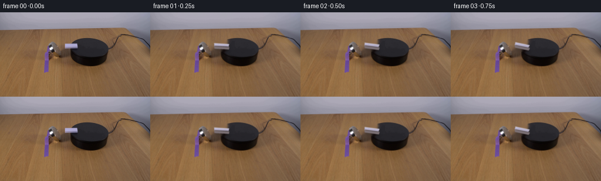
展开代码变化
--- 上一保存版本
+++ 本次保存版本
@@ -34,25 +34,30 @@
mask = np.zeros((H, W), np.uint8)
cv2.fillPoly(
mask,
- [np.array([[106, 50], [111, 48], [135, 49], [137, 56], [135, 65], [109, 65], [106, 60]])],
+ [np.array([[104, 50], [109, 47], [136, 48], [138, 55], [136, 66], [108, 66], [104, 61]])],
255,
)
mask = cv2.GaussianBlur(mask, (3, 3), 0.55)
clean = cv2.inpaint(source, mask, 3.2, cv2.INPAINT_NS)
- # Re-establish the clean diagonal top edge where the object crossed it.
yy, xx = np.mgrid[:H, :W]
edge_x = 141.6 - 0.72 * (yy - 44.0)
near_platform = (yy >= 49) & (yy <= 63) & (xx >= 118) & (xx <= 143)
inside = near_platform & (xx >= edge_x + 1.0)
clean[inside] = np.array([40, 39, 44], dtype=np.float64)
- # A very light grain modulation keeps the repaired wood from looking painted.
+ # Carry the table's diagonal grain through the repaired wood, with low-frequency
+ # tonal variation and only a trace of fine noise at this small output size.
repaired = (mask > 2) & (xx < edge_x)
rng = np.random.default_rng(95)
- noise = cv2.GaussianBlur(rng.normal(0.0, 4.0, (H, W)).astype(np.float32), (0, 0), 1.1)
- for c, tint in enumerate((-0.4, 0.0, 0.6)):
- clean[:, :, c] = np.where(repaired, clean[:, :, c] + noise + tint, clean[:, :, c])
+ wood_tex = cv2.GaussianBlur(rng.normal(0.0, 8.0, (H, W)).astype(np.float32), (0, 0), 2.2)
+ grain = 2.3 * np.sin((xx * 0.42 + yy * 0.91) * np.pi)
+ grain += 1.1 * np.sin((xx * 0.15 - yy * 0.28) * np.pi + 1.7)
+ tint = np.array((-0.6, -0.2, 0.7))
+ for c in range(3):
+ clean[:, :, c] = np.where(
+ repaired, clean[:, :, c] + wood_tex * (0.72 + c * 0.08) + grain + tint[c], clean[:, :, c]
+ )
return np.clip(clean, 0, 255).astype(np.uint8)
@@ -64,14 +69,14 @@
def slab_geometry(center, angle):
"""Projected top and side faces of the small plastic domino."""
cx, cy = center
- half_len, half_width = 12.25, 2.65
- foreshorten = 0.57
+ half_len, half_width = 12.25, 2.85
+ foreshorten = 0.62
corners = []
for sx, sy in ((-1, -1), (1, -1), (1, 1), (-1, 1)):
x, y = rotate_xy(sx * half_len, sy * half_width, angle)
corners.append((cx + x, cy + y * foreshorten))
- top = rounded_quad(corners, radius=0.75)
- base = top + np.array([0.55, 4.8])
+ top = rounded_quad(corners, radius=0.68)
+ base = top + np.array([0.6, 5.0])
return top, base, np.asarray(corners)
@@ -102,7 +107,7 @@
fill_polygon(side, wall_poly, (113, 102, 108))
wall_alpha = (side.max(axis=2) > 0).astype(np.float64) * 0.98
wall_alpha = cv2.GaussianBlur(wall_alpha, (0, 0), 0.42 * SS)
- for c, color in enumerate((119.0, 108.0, 113.0)):
+ for c, color in enumerate((124.0, 113.0, 117.0)):
hi[:, :, c] = hi[:, :, c] * (1 - wall_alpha) + color * wall_alpha
# Slightly darker near-side wall gives the thin slab believable thickness.
@@ -110,7 +115,7 @@
near_mask = np.zeros((H * SS, W * SS), np.uint8)
fill_polygon(near_mask, near, 255)
near_alpha = (near_mask.astype(np.float64) / 255.0) * 0.52
- for c, color in enumerate((91.0, 82.0, 91.0)):
+ for c, color in enumerate((98.0, 89.0, 96.0)):
hi[:, :, c] = hi[:, :, c] * (1 - near_alpha) + color * near_alpha
# Bright top surface with a warm highlight on the upper edge.
@@ -122,9 +127,9 @@
y1 = int(np.ceil(max(p[1] for p in top) * SS)) + 1
gradient = np.clip((yy - y0) / max(1, y1 - y0), 0, 1)
top_color = np.empty((H * SS, W * SS, 3), np.float64)
- top_color[:, :, 0] = 188 - 22 * gradient
- top_color[:, :, 1] = 183 - 23 * gradient
- top_color[:, :, 2] = 211 - 28 * gradient
+ top_color[:, :, 0] = 187 - 18 * gradient
+ top_color[:, :, 1] = 182 - 19 * gradient
+ top_color[:, :, 2] = 211 - 25 * gradient
for c in range(3):
hi[:, :, c] = hi[:, :, c] * (1 - top_alpha) + top_color[:, :, c] * top_alpha
@@ -158,9 +163,9 @@
frames = [source.copy()]
for i in range(1, N):
t = i / (N - 1)
- eased = t * t * (3 - 2 * t)
- angle = np.deg2rad(151.0 * eased)
- frames.append(render_domino(clean, (121.3, 55.5), angle, i))
+ eased = 0.7 * t + 0.3 * (t * t * (3 - 2 * t))
+ angle = np.deg2rad(149.0 * eased)
+ frames.append(render_domino(clean, (121.3, 55.7), angle, i))
frames = np.stack(frames).astype(np.uint8)
assert frames.shape == (N, H, W, 3)
assert np.array_equal(frames[0], source)
可观测工具轨迹
实际执行的命令与返回图片。
命令 1exit 0
/bin/bash -c "pwd && rg --files -g '"'!*.png'"' -g '"'!*.jpg'"' -g '"'!*.mp4'"' | sort | sed -n '1,160p'"
命令 2exit 0
/bin/bash -c "sed -n '1,240p' prompt.txt"
命令 3exit 0
/bin/bash -c "sed -n '1,280p' GENERATION_RULES.md"
命令 4exit 0
/bin/bash -c "find . -maxdepth 2 -type f -printf '%p\\n' | sort | sed -n '1,200p'"
命令 5exit 0
/bin/bash -c "sed -n '1,260p' artifact_io.py"
命令 6exit 0
/bin/bash -c "sed -n '1,260p' player_template.html"
命令 7exit 127
/bin/bash -c "file first_frame.png && identify -verbose first_frame.png | sed -n '1,80p'"
命令 8exit 0
/bin/bash -c "python - <<'PY'
from PIL import Image
im=Image.open('first_frame.png')
print(im.size, im.mode)
im.crop((70,35,160,90)).resize((720,440)).save('.tmp/scene_crop.png')
PY"命令 9exit 0
/bin/bash -c "python - <<'PY'
from PIL import Image
import numpy as np
im=np.array(Image.open('first_frame.png'))
# print rows/cols stats for crop, identify purple & white pixels
for name,mask in [
('purple',(im[:,:,0]>70)&(im[:,:,0]<150)&(im[:,:,2]>90)&(im[:,:,1]<90)),
('white',(im.min(2)>150)&(np.max(im,2)-np.min(im,2)<35)),
('black',(im.max(2)<40)),
('silver',(im.min(2)>60)&(im.max(2)-im.min(2)<25))]:
ys,xs=np.where(mask)
print(name, (xs.min(),ys.min(),xs.max(),ys.max()), 'n',len(xs))
# exact purple sample ranges
mask=(im[:,:,0]>70)&(im[:,:,0]<150)&(im[:,:,2]>90)&(im[:,:,1]<90)
for y in range(50,80):
xs=np.where(mask[y])[0]
if len(xs): print(y,xs.min(),xs.max(),len(xs))
PY"命令 10exit 0
/bin/bash -c "python - <<'PY'
from PIL import Image, ImageDraw
im=Image.open('first_frame.png').crop((88,36,142,72)).resize((540,360),Image.Resampling.NEAREST)
d=ImageDraw.Draw(im)
for x in range(0,55,5):
d.line((x*10,0,x*10,360),fill=(255,0,0),width=1)
d.text((x*10+2,2),str(88+x),fill=(255,0,0))
for y in range(0,37,5):
d.line((0,y*10,540,y*10),fill=(255,0,0),width=1)
d.text((2,y*10+2),str(36+y),fill=(255,0,0))
im.save('.tmp/grid.png')
PY"命令 11exit 0
/bin/bash -c "python - <<'PY'
from PIL import Image
import numpy as np
im=np.array(Image.open('first_frame.png'))
for p in [(120,51),(110,50),(130,50),(120,55),(115,56),(105,52),(100,54),(110,45),(120,44),(120,60),(120,65),(100,60),(105,65),(90,50),(140,55)]:
x,y=p; print(p, im[y,x].tolist())
# print rows around domino values grayscale
for y in range(43,61):
print(y, [int(im[y,x].mean()) for x in range(104,137)])
PY"命令 12exit 0
/bin/bash -c "python - <<'PY' import importlib.util for m in ['numpy','PIL','cv2','scipy','skimage']: print(m, bool(importlib.util.find_spec(m))) PY"
命令 13exit 0
/bin/bash -c "python - <<'PY'
from PIL import Image
import numpy as np
im=np.array(Image.open('first_frame.png'))
for y in range(35,68):
# black mask x 100-150
xs=np.where(np.max(im[y,:,0:3],axis=1)<65)[0]
xs=xs[(xs>=90)&(xs<=160)]
if len(xs):
print(y, xs.min(), xs.max())
PY"命令 14exit 0
/bin/bash -c "python - <<'PY'
from PIL import Image
im=Image.open('first_frame.png').crop((70,30,170,95)).resize((1000,650),Image.Resampling.NEAREST)
im.save('.tmp/area.png')
PY"命令 15exit 0
/bin/bash -c 'python generate.py'
命令 16exit 0
/bin/bash -c "python - <<'PY'
from PIL import Image,ImageDraw
import numpy as np
ims=[Image.open(f'frames/{i:02d}.png').crop((82,34,162,78)).resize((400,220),Image.Resampling.NEAREST) for i in range(20)]
out=Image.new('RGB',(400*4,240*5),(20,20,20)); d=ImageDraw.Draw(out)
for i,im in enumerate(ims):
x=(i%4)*400;y=(i//4)*240
out.paste(im,(x,y+20)); d.text((x+5,y+3),f'{i}',fill='white')
out.save('.tmp/allcrops.png')
PY"命令 17exit 0
/bin/bash -c "python - <<'PY'
from PIL import Image
for i in [1,4,7,9,12,15,19]:
Image.open(f'frames/{i:02d}.png').crop((82,34,162,78)).resize((800,440),Image.Resampling.NEAREST).save(f'.tmp/f{i:02d}.png')
PY"命令 18exit 0
/bin/bash -c "python - <<'PY'
import generate
from PIL import Image
import numpy as np
src=np.array(Image.open('first_frame.png'))
clean=generate.build_clean_plate(src)
Image.fromarray(clean).crop((70,30,170,90)).resize((1000,600),Image.Resampling.NEAREST).save('.tmp/clean.png')
PY"命令 19exit 0
/bin/bash -c "python - <<'PY'
from PIL import Image
import numpy as np
im=np.array(Image.open('first_frame.png'))
# compare source texture along row regions, dominant wood colors and orientation sample
for y in [48,50,52,54,56,58,60,62,64]:
print(y, [(x, im[y,x].tolist()) for x in [100,105,110,115,120,125,130]])
PY"命令 20exit 0
/bin/bash -c 'python generate.py'
命令 21exit 0
/bin/bash -c "python - <<'PY'
from PIL import Image,ImageDraw
ims=[Image.open(f'frames/{i:02d}.png').crop((82,34,162,78)).resize((400,220),Image.Resampling.NEAREST) for i in range(20)]
out=Image.new('RGB',(1600,1200),(20,20,20)); d=ImageDraw.Draw(out)
for i,im in enumerate(ims):
x=(i%4)*400;y=(i//4)*240
out.paste(im,(x,y+20)); d.text((x+5,y+3),f'{i}',fill='white')
out.save('.tmp/allcrops2.png')
PY"命令 22exit 0
/bin/bash -c "python - <<'PY'
from PIL import Image
import numpy as np, json, os
src=np.array(Image.open('first_frame.png').convert('RGB'))
frames=np.stack([np.array(Image.open(f'frames/{i:02d}.png').convert('RGB')) for i in range(20)])
print('frames',frames.shape,frames.dtype)
print('frame0 identical',np.array_equal(frames[0],src),'maxdiff',np.abs(frames[0].astype(int)-src.astype(int)).max())
print('changed pixels per step',[int(np.any(frames[i]"'!=frames[i-1],axis=2).sum()) for i in range(1,20)])
print('"'unique frame count',len(np.unique(frames.reshape(20,-1),axis=0)))
with np.load('pixels.npz') as z: print('pixels.npz',z['pixels'].shape,z['pixels'].dtype)
print('html bytes',os.path.getsize('index.html'))
PY"命令 23exit 0
/bin/bash -c "python - <<'PY'
from pathlib import Path
import re,json
p=Path('index.html').read_text()
m=re.search(r'const DATA=(\\{.*?\\}),W=',p)
print('data found',bool(m))
if m:
d=json.loads(m.group(1)); print({k:d[k] for k in ['id','width','height','frames','fps']}); print('deltas',len(d['deltas']))
print('artifacts',[(x,Path(x).exists(),Path(x).stat().st_size if Path(x).exists() else 0) for x in ['generate.py','frames','pixels.npz','inspection.png','transition_check.png','index.html']])
PY"命令 24exit 0
/bin/bash -c "python - <<'PY'
from PIL import Image
import numpy as np
frames=np.stack([np.array(Image.open(f'frames/{i:02d}.png').convert('RGB')) for i in range(20)])
# bbox for pixels differing from frame 0 after frame 1, restricted near object
base=frames[0]
for i in [1,5,10,15,19]:
m=np.any(frames[i]"'!=base,axis=2)
ys,xs=np.where(m & (np.indices(m.shape)[0]<80) & (np.indices(m.shape)[1]>95) & (np.indices(m.shape)[1]<145))
print(i,(xs.min(),ys.min(),xs.max(),ys.max()) if len(xs) else None)
PY'命令 25exit 0
/bin/bash -c "python - <<'PY'
from PIL import Image
import numpy as np
for i in [0,1,5,10,19]:
im=np.array(Image.open(f'frames/{i:02d}.png'))
# object-ish bright purple-ish region only
yy,xx=np.indices(im.shape[:2]); m=(xx>100)&(xx<140)&(yy>40)&(yy<75)&(im[:,:,0]>120)&(im[:,:,2]>140)
ys,xs=np.where(m)
print(i,'bbox', (xs.min(),ys.min(),xs.max(),ys.max()),'n',len(xs))
PY"命令 26exit 0
/bin/bash -c 'python -m py_compile generate.py && git status --short 2>/dev/null || true'
视觉工具实际返回图片 1

视觉工具实际返回图片 2
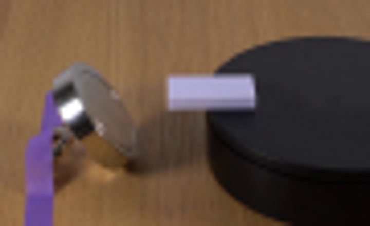
视觉工具实际返回图片 3
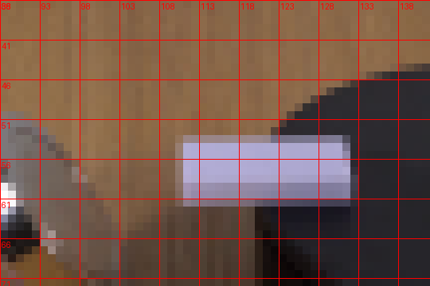
视觉工具实际返回图片 4
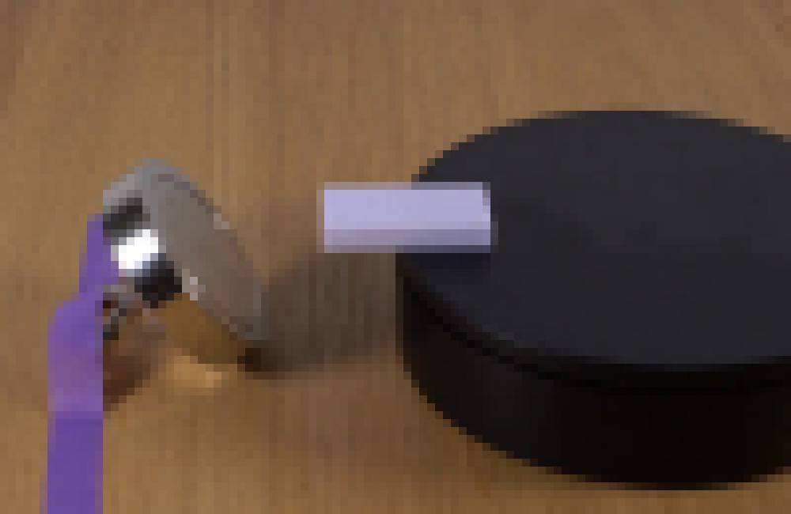
视觉工具实际返回图片 5
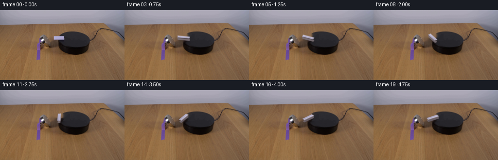
视觉工具实际返回图片 6
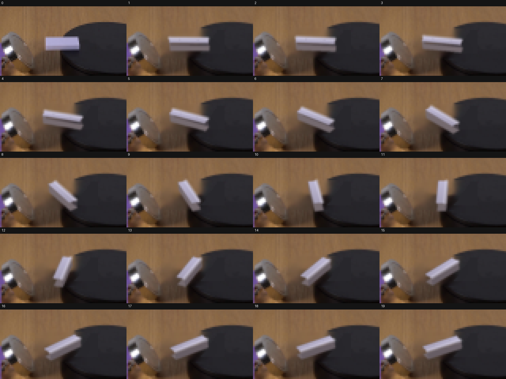
视觉工具实际返回图片 7

视觉工具实际返回图片 8
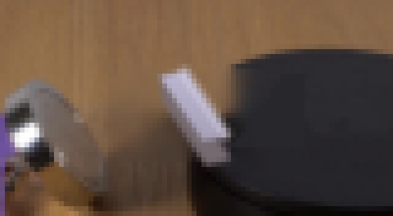
视觉工具实际返回图片 9
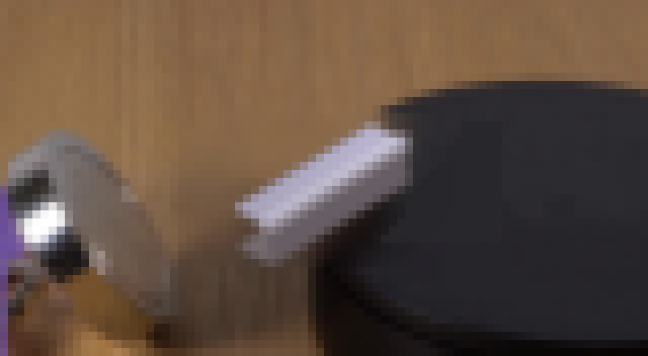
视觉工具实际返回图片 10
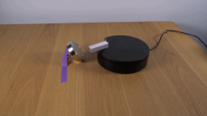
视觉工具实际返回图片 11
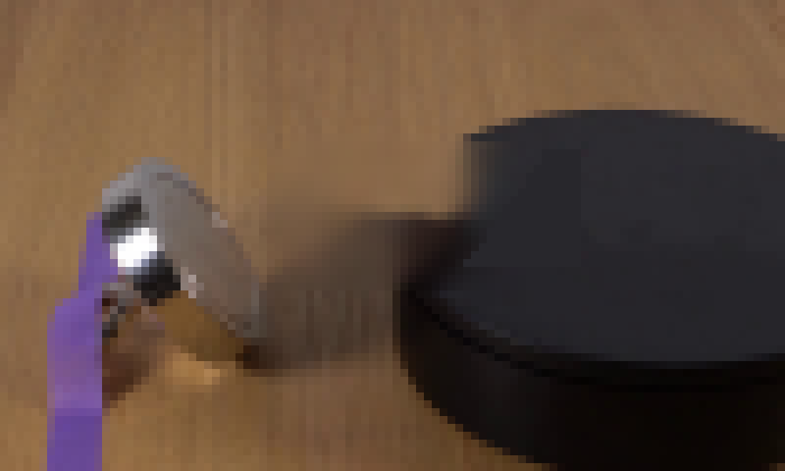
视觉工具实际返回图片 12
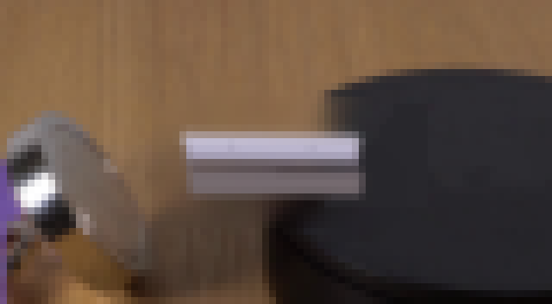
视觉工具实际返回图片 13
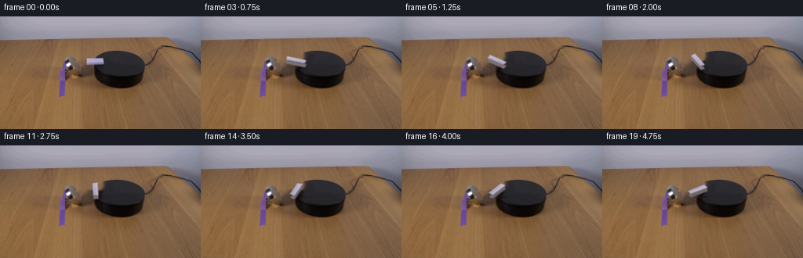
视觉工具实际返回图片 14
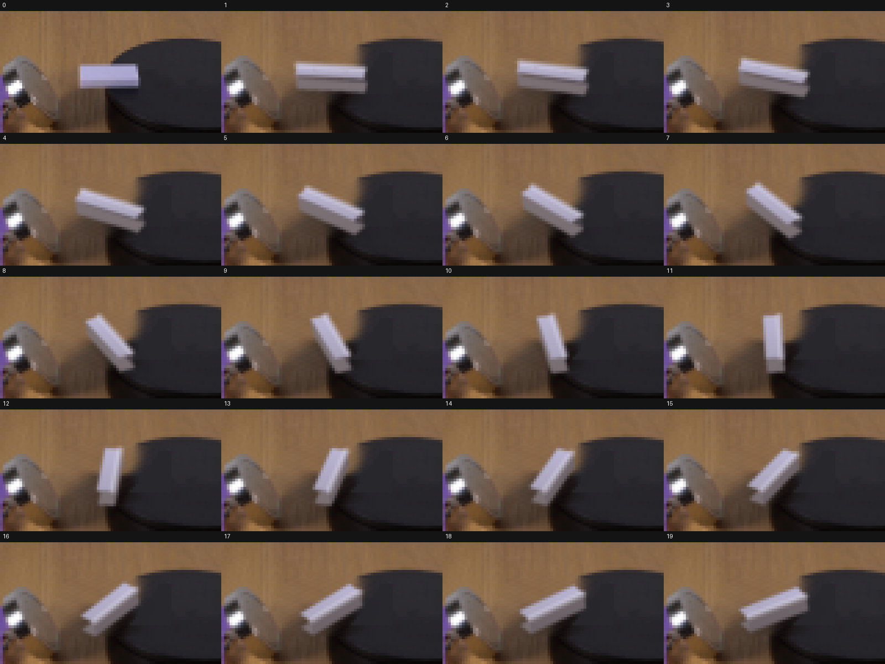
视觉工具实际返回图片 15
保存候选 2 份；完成命令 26 次；可验证图片返回 15 张。原始 API 响应与完整日志保留在本地。